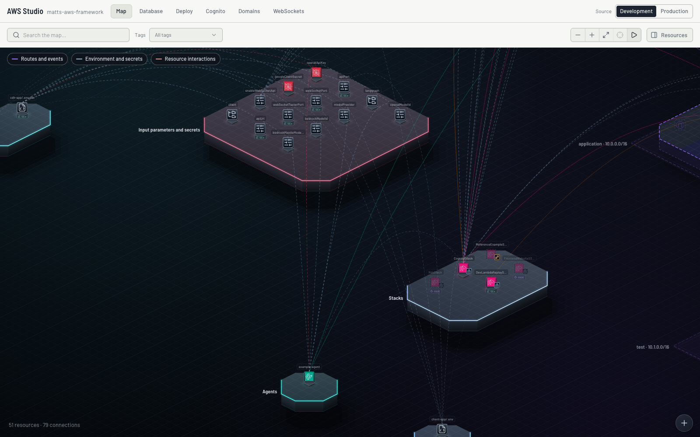
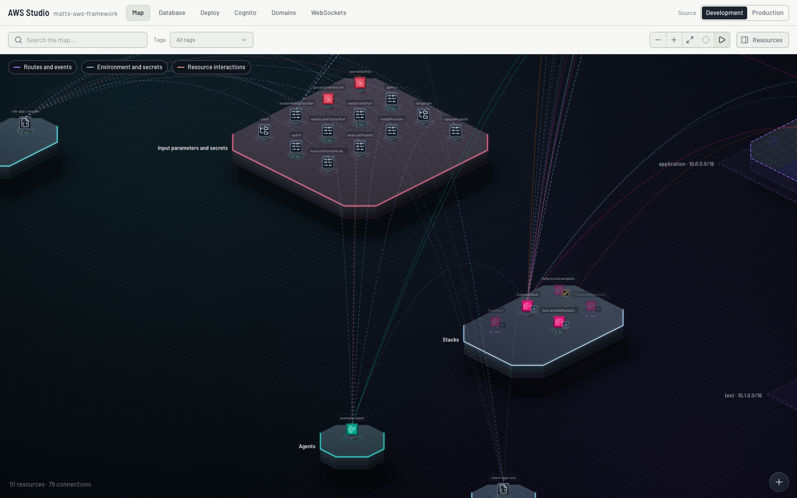
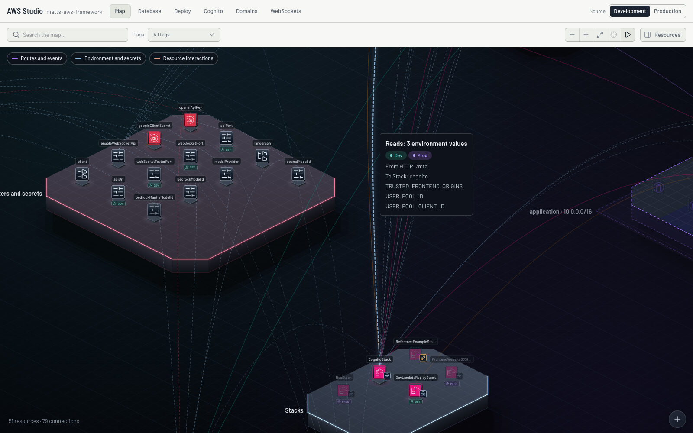
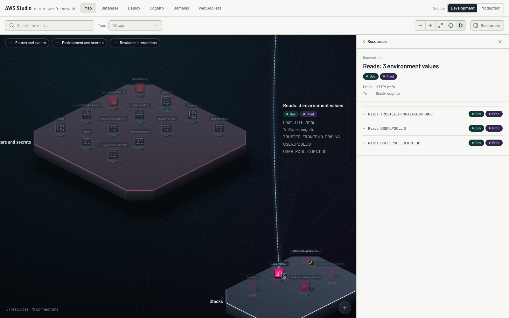
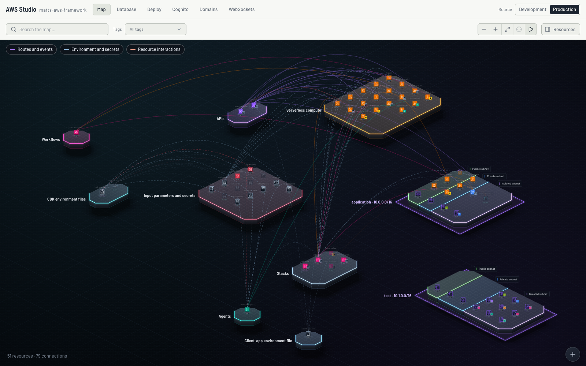
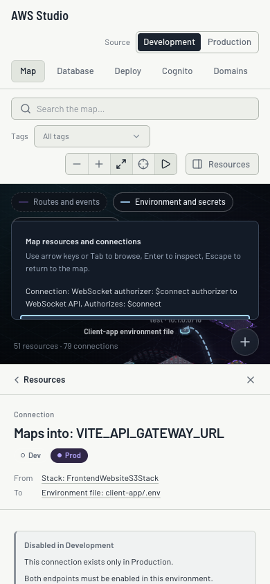

Framework Studio · October 27, 2026 · second-pass review
Keep the new separation, with two collision fixes.
I prefer the latest commit. The agent and Cognito fans are easier to trace as individual connections. The previous version looks slightly tidier because more wires overlap, but that hides relationships. Increasing the global spacing further would spread the input wires into a more tangled weave. The refinement keeps the existing spacing and silhouette.


Before latest commitRefined
Drag the slider or use its arrow keys. Screenshots use the same 1600 × 1000 viewport, world camera, zoom and enabled connection filters, with motion paused. The two reference servers use Git-frozen routing code and the same live snapshot. Refined and latest intentionally look the same on this application's current geometry; the fixes affect collision cases covered by the regression tests.
Measured on the current graph
| All 79 connections | Before | Latest / refined |
|---|
| Competing near-parallel length | 93,912 | 54,420 (−42.1%) |
| Competing pairs | 221 | 161 |
| Crossing pairs without shared endpoints | 358 | 355 |
| Total wire length | 126,757 | 127,214 (+0.36%) |
World-unit geometry measured using the existing corridor detector and sampled polylines. Includes relationships hidden by the default filters. These figures describe this graph, not a guarantee for every architecture.
What changed in this pass
- Validate the final fallback curves. Overlap rollback could halve a safe bow into an obstacle after collision validation. The final check now runs after rollback and tiny-move removal, restoring unsafe endpoint-pair groups together.
- Check every parallel sibling. The first wire previously chose a shared curve for all siblings. Candidate curves now check every offset, including reverse-direction wires, at the final 24-segment resolution.
Three regression tests cover the new behavior. The existing 300-connection limit remains: larger graphs keep their base arcs. Dense areas still require zoom or selection; this heuristic does not eliminate all crossings.
Interaction evidence

Reads wire hover; its neighboring IAM grant was independently hovered and clicked.

Connection selection opens the correct inspector.

Production overview; switching back to Development preserved every connection's geometry.

390 × 844 layout; arrow navigation and Enter open a connection inspector below the canvas.
Also checked actual wheel zoom, mouse drag panning, keyboard pan/zoom/fit, connection navigation, mobile fit, and an isolated Chrome DevTools reproduction. No application console errors or failed API requests were observed.
Verification
Studio production build, 11 focused routing/corridor tests, five focused graph-layout tests, and documentation link checks pass. The full repository verification was run; its unrelated baseline failures and final counts are recorded in verification.txt. No database application or cloud deployment was performed.